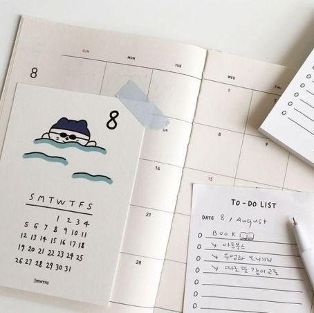

S E L A M A T M E N C O B A.
1.KENALI GAYA BERPAKAIAN
Kunci agar tampil percaya diri adalah dengan mengenali terlebih dahulu gaya berpakaian yang kamu sukai. Apakah kamu menyukai gaya feminin atau gaya tomboy? Apakah kamu menyukai warna pastel, warna bold atau warna netral? Apakah kamu sering berkegiatan di luar ruangan, sehingga lebih nyaman dalam berpakaian
2.BELI PAKAIAN YANG MUDAH DIPADUKAN
Merasa sering membeli baju, namun yang kamu pakai hanya itu-itu saja? Mungkin hal ini terjadi karena kamu membeli sepotong pakaian yang kamu anggap bagus, namun tidak punya gambaran untuk mix and match. Pakaian yang bagus belum tentu dapat dipadukan dengan pakaian yang sudah kamu miliki di rumah. Sebaiknya kamu yakin bahwa kamu sudah punya paduan yang tepat untuk pakaian yang akan kamu beli.
3.ROTASI LEMARI
Solusinya, jangan lupa untuk merotasi isi lemari pakaian kamu setidaknya seminggu sekali. Pakaian yang terletak di bagian bawah sebaiknya kamu pindahkan ke bagian atas. Ingin tahu trik kecil untuk memperbaharui koleksi pakaian? Ajak kakak, adik, sepupu atau sahabatmu untuk saling bertukar beberapa potong pakaian setiap minggu. Asal jangan lupa dikembalikan dalam keadaan baik, lho.
4.LUANGKAN WAKTU
Rasanya hanya sedikit sekali orang yang langsung menemukan padanan baju yang sesuai ketika mereka membuka lemari pakaian. Apalagi ketika sedang terburu-buru, rasanya baju yang kita pilih kurang bervariasi. Selagi berdandan atau menyiapkan sarapan, mulailah memikirkan gambaran baju yang akan kamu kenakan pada hari itu. Sebagian orang bahkan meluangkan waktu menyiapkan pakaian semalam sebelumnya, agar mereka tidak terbemiliki waktu untuk memilih pakaian.
5.AKSESORIS
Jangan bergantung pada pakaian saja untuk mengubah penampilan jadi lebih modis. Coba kumpulkan aksesoris seperti kalung, gelang, atau tas unik untuk mendukung penampilanmu. Ikatkan scarf kecil pada pegangan tas, atau belajar membuat headscarf yang unik. Kamu tidak perlu menggunakan baju baru setiap harinya, cukup dengan mengubah satu elemen dalam penampilanmu.
selengkapnya